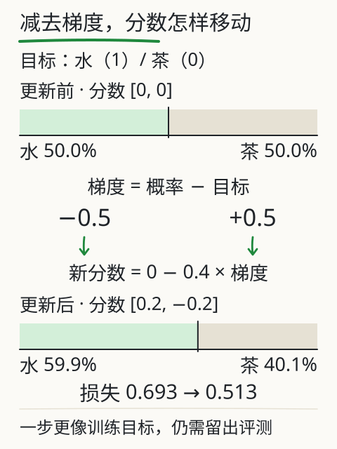
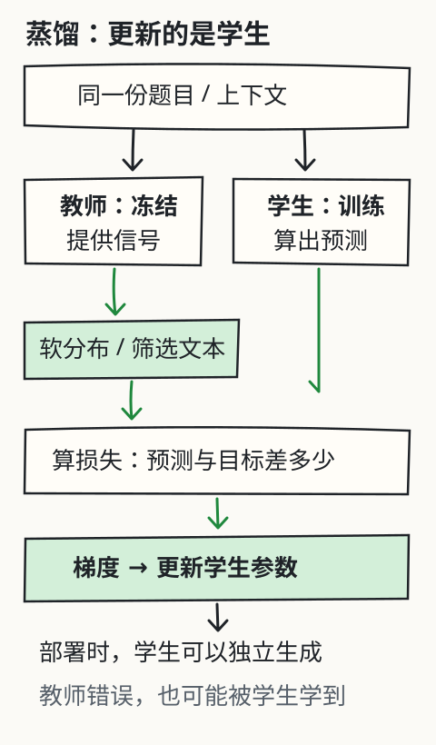

模型是怎样学会的？
给一个刚初始化的小模型看“我喝”两个片段，它还不知道下一步该偏向什么。让它多次比较自己的预测与训练文本中的目标，再看“水”“茶”“咖啡”的概率怎样变化。
想直接追问模型蒸馏，可以先读基础更新，再跳到蒸馏：教师的输出怎样变成学生的参数。
这次真的更新一张参数表
这个模型只看前一个 token，叫 bigram 模型。它为每一对“前一个→下一个”保存一个分数。七个 token 共用一张 7×7 的参数表，经 softmax 得到下一步概率。
它没有注意力，也不理解长句。用它来学习“预测—比较—更新”已经足够，不能用它的效果推断大模型的能力。

让小模型学着接下一步
训练集与未见组合
训练集（保留重复）：我喝水。、我喝水。、我喝茶。、她喝咖啡。
未见组合：我喝咖啡。、她喝茶。
实线：训练损失；虚线：未见组合损失。纵轴为交叉熵（自然对数），越低表示这组目标平均获得的概率越高。
展开选中参数的一步更新
查看最近的实算曲线点
模型只按前一个 token 预测下一个 token；它不是 Transformer，不具有长上下文能力，不能从本实验推断大模型规模效应。
损失在比较什么？
训练文本“我喝水。”提供三对目标：“我→喝”“喝→水”“水→。”。模型给目标的概率越低，这一对的交叉熵损失 −ln(目标概率) 越大。
重复出现的句子也参加统计。本页共有 12 对训练目标；每一步用全部训练对计算平均损失和梯度。曲线上的每一个点都来自当前参数，没有预先画好的下降路线。
先只点“更新一步”。展开更新细节，看“喝→水”这个参数的旧值、梯度、学习率和新值，再对照概率。参数按 新值 = 旧值 − 学习率 × 梯度 更新。梯度为负时，减去负数使参数上升。
推理使用参数，训练改变参数
暂停训练，再点“只预测一次”。概率由现有参数算出，步数和参数都保持不变。你换了提问、补充了材料，通常改变的是这一次的输入。
在 DeepSeek V4.1 Flash 或 Kimi K3 的对话中纠正一句话，后续回答可能因上下文变化而变好。单凭这点，不能判断线上模型参数已经更新。应用另行保存的记忆、服务商之后的数据处理和训练，也应分别看待。
训练集变好之后，还要看什么？
点击连续训练，随时可以暂停或重置。实线是训练损失，虚线是未见组合的损失。这里未见的是句子组合，token 和部分相邻 token 对仍可能与训练集重合；它不是完全陌生领域的测试。
比较两条曲线，观察它们有没有同步变化。本页的数据很小，有的规律两边都适用，有的频率不同。即使两条损失都下降，也只能说明这组指标变好了，不能证明模型能完成实际任务。
真实项目还要保留独立评测材料，检查证据、错误类型和任务完成情况。不要因为训练损失变小，就省掉这些检查。
“知道错了”还不够，参数怎样真的动起来？
交叉熵把“目标被分到多少概率”变成一个可计算的数。目标概率为 0.5 时，−ln(0.5)≈0.693；若提高到 0.8，损失约为 0.223。这里比较训练目标，不是在给答案的事实可靠性打分。错误目标也能被学得越来越好。

看一个独立的两候选例子。水、茶的分数均为 0，概率都是 0.5，目标是水。两个分数的梯度分别为 0.5−1=−0.5、0.5−0=0.5。学习率取 0.4，新分数变为 [0.2,−0.2]，水的概率约为 0.599，损失约为 0.513。这和页面七词 bigram 是同一个更新原则，但候选数与数据不同。
大模型不会只改最后两个分数。若某个分数是 s=w×h，链式法则给出 ∂L/∂w=(∂L/∂s)×h。反向传播沿前向计算的依赖关系，把这种“影响怎样传下去”的计算扩展到各层；优化器再据梯度更新参数。它没有逐句把错误事实存进一个可查的更正表。
学习率过大可能跨过较低损失区域甚至让训练发散，过小则更新慢；真实训练还涉及批次、优化器状态、数据顺序与正则化。训练集改善但独立材料恶化时，要检查过拟合、数据差异及评测泄漏。不能因为一条曲线向下，就断言通用能力提高。
接下来的蒸馏保留这条“目标→损失→梯度→参数”的链，只改变了部分目标信号从哪里来：它可以由另一个模型提供。
蒸馏：教师的输出，怎样变成学生的参数？
前面的训练把文本中的下一个 token 当作目标。现在多一条获得目标的路：让一个已有模型先处理输入，再拿它给出的概率或回答训练另一个模型。前者叫教师，后者叫学生。教师提供训练信号，优化器更新学生参数，这就是这里讨论的知识蒸馏。[S43]
学生往往较小，也可以与教师大小相同、结构不同，甚至由多个教师共同提供信号。它通常已有预训练参数，不一定从零开始。蒸馏传递的是特定输入上的行为信号，不是把教师的一部分权重剪下来，也不是把所有知识完整装进更小的文件。

先分清两种训练材料
给定同一段前文，教师可能给出整个词表的下一 token 分布；也可能只给出一段已经生成的回答。两者都能用于蒸馏，但学生得到的信息不同。
| 能拿到什么 | 学生怎样学 | 没拿到什么 |
|---|---|---|
| 对齐候选的教师 logits 或概率 | 让学生分布靠近教师分布，常用交叉熵或 KL | 不因此得到教师内部权重或所有能力 |
| 教师生成的答案、解释或推理文本 | 将筛选后的文本当示范，用自回归交叉熵训练 | 生成时没选中的完整候选分布 |
第一种常叫软标签蒸馏；第二种常见于序列级或响应蒸馏。只会返回文本的接口，也能提供第二类材料，但不能假装从文字恢复出第一类完整分布。接口即使给出少数 token 的 logprob，也不等于整个词表的概率。[S43/S44]
为什么不只告诉学生“答案是水”？
本题额外给定一条已核实材料：“杯中是水”。把下一步候选限定为“水、茶、咖啡”，只是为了能手算。硬标签写成 [1,0,0]：水是目标，另外两项都不是。它没有表达茶与咖啡之间的区别。
教师的人工分数为 [3,2,0]。温度为 1 时，概率约为 [70.54%,25.95%,3.51%]。教师除了偏向水，还给茶分配了更高的相对概率。软目标让学生同时看到这些相对关系；这些关系可能有用，也可能包含教师的偏差。不能把“25.95% 的生成概率”解释成“杯中有 25.95% 的可能是茶”。
真实语言模型在每个位置通常要比较整个词表。做逐 token 的分布匹配时，教师和学生需要对应同一上下文、同一目标位置，并对齐候选含义；词表、分词器不同，不能把两个数组按下标直接相减。文本蒸馏则可以由学生自己的分词器重新编码示范。
温度把分布展开，但没有增加事实
对分数 z，温度 T 下的概率为：
pᵢ(T) = exp(zᵢ/T) / Σⱼ exp(zⱼ/T)
本例 T 从 1 改到 2，教师的分布约变为 [54.65%,33.15%,12.20%]。低概率项更容易参与训练。教师和学生都用同一个 T 计算蒸馏分布，避免把两个不同温度的目标混在一起。[S43]
温度过高时，分布会接近均匀，区别也可能变弱；温度没有越高越好的通用结论。用于训练分布的温度，与部署时抽样生成的温度是两个设置。本实验同时显示学生的 q(T) 和 q(1)：它们来自同一组学生分数，不是两个模型。只改 T 是重新计算概率；按训练按钮才更新参数。
学生到底在最小化什么？
用 p 表示固定教师，用 q 表示学生。先看一种常见目标：
KL(p(T) ‖ q(T)) = Σᵢ pᵢ(T) × ln[pᵢ(T) / qᵢ(T)]
这衡量学生与教师分布的差异，方向也有含义：这里由教师 p 加权。教师固定时，它与软目标交叉熵只差一个不依赖学生参数的教师熵，因此对学生有相同梯度。KL 不对称；换成 KL(q‖p) 不能当成相同算法。
若还有经过核实的硬标签 y，可以混合两种信号：
L = α × T² × KL(p(T) ‖ q(T))
+ (1−α) × CE(y, q(1))
这里 α 是软目标权重；α=0 只学硬标签，α=1 只匹配教师。硬标签部分在 T=1 下计算。本课用单一已核实目标，所以 CE = −ln q目标(1)；其他配方可以不同。
为什么乘 T²？未经补偿的软目标梯度为 (qᵢ(T)−pᵢ(T))/T。在较高温度、固定分数差等近似条件下，概率差还会大致再缩小 1/T，因而整体尺度约按 1/T² 缩小。T² 用于补偿训练信号的尺度变化，便于和硬目标共同使用；不是准确率倍增器，也不保证不同温度下梯度完全相同。[S43]
乘过 T² 后，混合损失对学生分数 sᵢ 的梯度是：
∂L/∂sᵢ = αT(qᵢ(T)−pᵢ(T))
+ (1−α)(qᵢ(1)−yᵢ)
学生再按 新分数 = 旧分数 − 学习率 × 梯度 更新。深层网络还需把梯度反传到学生各层；教师在这份配方中冻结。这里把三个分数本身当作学生参数，让你直接看到变化。
把教师分布变成学生的一步更新
本题已核实杯中是水；比较三种候选的训练信号
| 候选 | 教师 p(T) | 学生 q(T) | 学生 q(1) |
|---|
只优化同一个上下文的三项学生 logits；没有语言网络、反向传播穿层或泛化测试，不是实际模型输出。硬标签“水”由本题材料指定，教师的概率不是真实情况的证据。 改温度、权重或教师会重置学生，便于从同一初始状态比较；最多 100 步。
损失下降，也可能把错误学进去
先用默认条件更新一步，核对旧值、梯度、新值与损失。再保持 α=0.7、T=2，把教师换成故意偏向茶的 [0,3,2]。虽然本题已经核实是水，学生第一步给水的推理概率仍会下降：错误软信号压过了这一权重下的硬标签信号。
把 α 调到 0，再更新一步，学生只根据硬标签训练。这个对比说明教师数据和损失权重为什么需要检查，不代表 α=0 对所有任务都最好。更不能因为学生的 KL 很小，就宣布回答真实可靠。KL 只检查它在这些输入上多像教师。
只有教师回答文本时，训练怎样进行？
设教师针对题目 x 生成示范序列 ŷ₁,…,ŷₘ。学生的一个常见目标为：
L文本 = −Σₜ ln q学生(ŷₜ | x, ŷ_<t)
这里 t 之前的符号指示范文本前缀。训练时把前缀作为条件，让学生预测下一个示范 token；这是 teacher forcing。词元层面仍是交叉熵，监督目标来自教师生成的整段序列。经典序列蒸馏用教师解码序列近似序列分布，不要求保存所有候选序列的概率。[S44]
生成一份材料常要经过“设计题目→教师生成→核对和筛选→用学生分词器编码→训练学生→独立评测”。去重、排除评测题及其近似改写、保留来源和错误类型，都影响这份材料能否说明泛化。筛选不是装饰步骤：错误答案、缺失条件和互相矛盾的解释，也会成为训练目标。
最简单的响应蒸馏是离线流程：学生训练在固定教师示范上。其他方法也可能采样学生自己的回答，再让教师提供反馈，以减轻训练前缀和学生实际生成前缀的差异。本课没有实现这些方法；不能把一次三候选更新当作完整语言模型蒸馏。
推理蒸馏：学到的“推理”是哪一层？
只训练最终答案，与训练“题目、解释步骤、最终答案”两种数据，给学生的可见监督不同。包含有效中间步骤的示范，可以给它更多问题分解与作答模式的训练信号；这仍是通过数据改变学生参数，不是读取或复制教师不可见的内部思维。
会复述步骤不等于每一步正确。冗长、前后不一致或答案对但过程错的轨迹，都可能被模仿。要在未进入训练的数据上检查答案、条件与中间步骤；能执行的数学或代码任务可加独立验证，开放任务仍需明确评测依据。文本长度、训练损失或与教师措辞相似，都不能替代这些证据。
一个可核查的历史例子是 2025 年 DeepSeek-R1 首版报告第 2.4 节：它描述用整理的教师数据微调 Qwen/Llama 系列学生，报告该组蒸馏模型没有再加 RL 阶段。这是该版本的具体配方，不能推广成“蒸馏从不用 RL”，也不能移给 DeepSeek V4.1 Flash 或 Kimi K3；后两者的实际蒸馏路线需要各自公开依据。[S45]
和微调、量化、剪枝、RAG 分别是什么关系？
| 方法 | 主要改什么 | 蒸馏与它的关系 |
|---|---|---|
| 监督微调 SFT | 用示范数据更新参数 | 教师响应可以成为 SFT 数据；数据来源与训练目标是两个维度 |
| 强化学习 RL | 根据奖励优化行为策略 | 可以与蒸馏前后结合；蒸馏不自动等于 RL |
| 量化 | 权重或计算的数值精度 | 不等于跟教师学习；可对蒸馏后的学生再量化 |
| 剪枝 | 删除或稀疏化部分连接/结构 | 改结构的机制不同，也可与蒸馏组合 |
| RAG | 取回材料，提供给本次输入 | 通常不更新模型参数；资料常变时不应靠蒸馏替代更新与引用 |
教师可以昂贵、学生可以更适合部署，但节省多少要看学生结构、硬件、序列长度和实际任务。生成训练材料和训练学生也有成本。蒸馏不保证按固定倍数变小、必然更快，或覆盖教师所有任务；在有限任务上也不能排除学生因数据、目标和评测条件不同而超过教师。
真要用时，先做一个可比较的验证
先明确要改善的是哪类任务、哪些错误和哪项部署限制。保留未参与采样、筛选及训练的评测集，在相同输入、解码设置和可比硬件上，对照未蒸馏学生、蒸馏学生、教师；分别记录任务正确性、证据/步骤错误、时延和内存。条件不同时保留差异，不能把演示数字写成通用压缩比例。
训练数据还需具备可用于相应用途的授权，涉及个人信息的材料要按实际约束处理。知识更新快、需要逐条引用或只做少量任务时，先比较检索、提示和工具是否已能满足条件，再决定是否值得建立蒸馏流程。
合上这一节，再判断两件事
- 教师概率
[0.6,0.3,0.1]与硬标签[1,0,0]各提供了什么？如果教师错了，学生会怎样？ - 只有教师生成的长篇解释，能否宣称自己匹配了教师全部词表概率，或复制了教师内部思维？
对照自己的解释
软目标给出各候选的相对概率，硬标签只指定目标；教师错误也可变成学生的训练信号，需要核对数据与独立评测。文本示范没有给出完整未选候选分布，也没有暴露教师内部状态；响应/推理文本蒸馏必须按实际提供的信息说明范围。
再深一层
对于某个训练对，softmax 分数的梯度是 预测概率 − 目标指示值：目标位置的指示值为 1，其余为 0。本页把 12 对梯度相加后除以 12，再更新所有参数。
bigram 的梯度可以直接写出来。深层网络需要反向传播，把损失对各层参数的影响逐层求出，再由优化器更新。优化器、训练批次和正则化等细节会影响结果；本页只实现全批量梯度下降，最多 500 步。